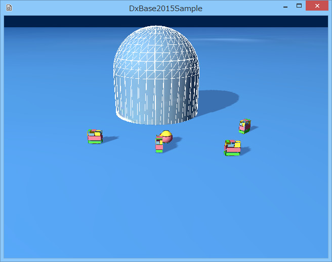

図1010a
ここにはいつものようにプレイヤーを追いかけるオブジェクトが配置されてますが、プレイヤーをあちこちに動かしてみると、追い掛けるオブジェクトが、いつもの動きとは違うことに気が付くと思います。
void CapsuleObject::Create(){
//中略
//オブジェクトのグループを得る
auto Group = GetStage()->GetSharedObjectGroup(L"CapsuleGroup");
//グループに自分自身を追加
Group->IntoGroup(GetThis<CapsuleObject>());
//中略
}
void SeekObject::Create(){
//中略
//ObstacleAvoidance操舵
auto PtrObstacleAvoidance = AddComponent<ObstacleAvoidanceSteering>();
//Capsuleオブジェクトのグループを得る
auto CapsuleGroup = GetStage()->GetSharedObjectGroup(L"CapsuleGroup");
vector<SPHERE> SphereVec;
for (size_t i = 0; i < CapsuleGroup->size(); i++){
auto Obj = CapsuleGroup->at(i);
auto PtrTrans = Obj->GetComponent<Transform>();
SPHERE Sp;
Sp.m_Center = PtrTrans->GetPosition();
Sp.m_Center.y = 0.0f;
Sp.m_Radius = 2.0f;
SphereVec.push_back(Sp);
}
PtrObstacleAvoidance->SetObstacleSphereVec(SphereVec);
//中略
}